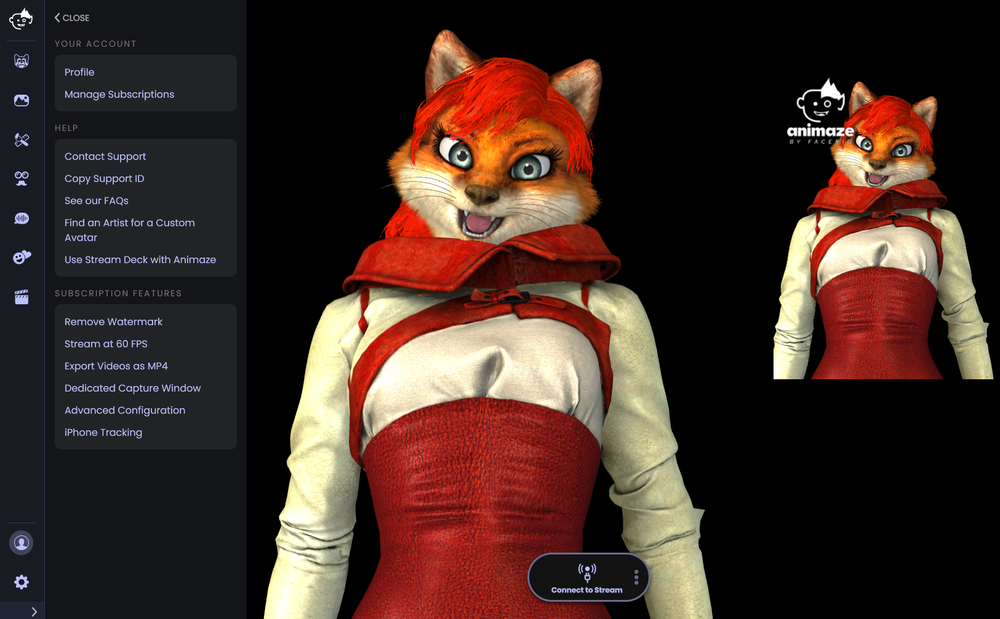

Animaze Desktop: How safe is your real face with Animaze?
Using the Secondary Render Window or broadcasting via Animaze Virtual Cam will never show your Webcam feed (Real Face) to anyone - even while calibrating. Even if your face is visible in a webcam feed while calibrating, that is never broadcasted outside of the Animaze app.
For more information on how to use these options can be found in our FAQ's here and here.

If you choose to capture the Animaze desktop app screen or window through software like OBS, your face may be visible a) if your webcam feed is open and you are capturing that portion of the screen or b) when you calibrate.